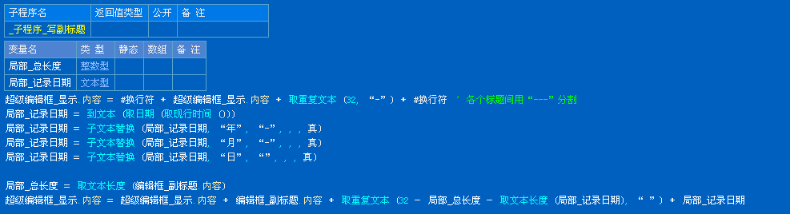

POS机制作说明
* 该例程针对“GPRINTER GP-5860Ⅱ”型打印机为例进行详解
㈠ 驱动程序安装
1.寻找对应驱动程序
首先打开驱动程序文件夹，仔细阅读“README”文本文档，找到相应驱动程序。如(图-1) 由于本例程针对“GPRINTER
GP-5860Ⅱ”型打印机为例进行详解，所以选择(图-1)中的“GP58DRVCN V
(图-1)
关闭“README”文本文档，找到相对应的驱动文件夹“
（图-2）
（图-3）

（图-4）
⒉安装过程
运行“GP58DRVCN V
（图-5）
点击“继续”按钮后，在如（图-6）窗口中选择“我接受协议”，并点击“继续”按钮继续。

（图-6）
点击窗口如（图-7）中的“继续”按钮，进行下一步的安装。
（图-7）
此时将弹出如（图-8）
的窗口，待其安装完毕后，在弹出窗口“选择操作系统”如（图-9）中选择自己的操作系统，并选择“中文”单选框后，点击“下一步”。
（图-8）
（图-9）
最后在“详细设置”窗口 如（图-10）中选择打印机型号后，单击“结束”按钮即可完成并退出POS机启动程序的安装。
（图-10）
㈡ 制作
1.制作思路
由于“GPRINTER GP-5860Ⅱ”型打印机的横向最大打印长度为WINDOWS正常字符大小下32个字符。所以要控制各个标题的长度，如果文本过长需换行显示。（本例程中不进行详解）其中列标题、内容及合计项需动态加入到“超级编辑框_显示”中，所以需以字符进行分割文本。
2.制作详解
⑴程序界面设计
按照（图-11）所示添加窗口及组件，除右侧的编辑框为超级编辑框外其他均为普通的编辑框。
(图-11)
⑵超级编辑框显示
①对各编辑框长度进行约束：长度不能超过32位字符长度。
②新建子程序“_子程序_写主标题 （）”以把主标题中的内容添加至“超级编辑框_显示”中，如（图-12） 。
（图-12）
③新建子程序“_子程序_写副标题 （）”以把副标题中的内容添加至“超级编辑框_显示”中。并在右侧为其加入日期。主标题与副标题之间用“---”进行分割。局部_记录日期用“子文本替换”替换成“xxxx-xx-xx”形式（不做图解） ，如（图-13）。

（图-13）
④新建子程序“_子程序_写列标题 （）”以把列标题中的内容添加至“超级编辑框_显示”中。其中4个列标题以“ ”（空格）分割。其中因为标题要对应下方的内容，且标题为4个字节长度，内容留出长度为“
（图-14）
⑤新建子程序“_子程序_写内容”由于POS机多与条码枪配合使用，所以本子程序的参数为条码枪读出的数据，形式为文本串例如“面包&2&50.00&100.00§面包片&1&110.00&
（图-15）
⑥新建子程序“_子程序_写合计（）”根据合计编辑框输入的标题 “总计”、“付款”及“找零”，提供给该子程序三个参数，总付款为操作员手工输入的值，应付款为“程序集_合计”的值，找零为两个值的差 ，具体代码如（图-16）。
（图-16）
⑦新建子程序“_子程序_写尾标题（）”与主标题写法相同 ，如（图-17）。
（图-17）
⑧至此编辑框所有子程序都编写完毕，在“_超级按钮_预览_被单击”子程序中一次调用刚才所写的所有子程序，并在调用副标题子程序后为程序加入操作员编号。具体代码如（图-18），预览后效果如（图-19）。
（图-18）
（图-19）
⑶设置主标题字体
①欲设置主标题大小，首先要在“超级编辑框_显示”中让主标题文字被选择，新建子程序“_子程序_主标题显示设置字体”，具体代码如（图-20）。
（图-20）
②打开“通用对话框”的属性窗口，调整“类型”为“字体选择”，再打开“超级编辑框_显示”的属性窗口,调整“隐藏选择”为“假”，如（图-21）。 然后在主窗口中双击“设置主标题字体”按钮进入代码编辑，其代码如（图-22）注：至此超级编辑框中主标题字体设置完成，但打印机无法按照超级编辑框中格式显示，必须把字体属性赋给打印机的字体。具体设置参看“输出打印”。
（图-21）
（图-22）
⑷输出打印
在主窗口中双击“打印”按钮进入代码编辑，首先要记录原有的字体以便打印输出不需要改变字体的部分，其次把“程序集_被选择格式”中记录的字体格式赋给打印机的字体属性，在打印机打出主标题后，需清空超级编辑框中的内容，否则将现2次主标题。再次把除主标题外的所有子程序重新调用写进超级编辑框。最后直接打印输出即可，其代码如（图-23）。
（图-23）
⑸添写数据库
点击主窗口中的确定按钮把该设置添加进数据库，以便使用。
最终打印结果如(图-24）

（图-24）
|
版权所有 大连大有吴涛易语言软件开发有限公司 电话:86-0411-88995831 传真:86-0411-88995834 |